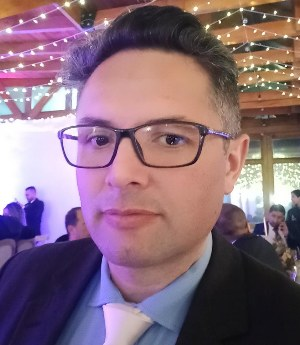

Yesid Augusto Romero Ruiz | WDD 130

Hi, I'm Yesid Romero, a passionate web development student with a strong background in sales and customer service. I'm currently focused on becoming a Full Stack Developer with a long-term goal of specializing in FinTech. Before making that leap, I'm preparing myself to start as a software tester, a role I'm training for through Coursera courses. I'm a student at Brigham Young University and work at O'Connor & Associates, helping clients reduce their property taxes. I'm married and a proud father of three. My life is guided by Christian values and the timeless wisdom of Stoic philosophy, both of which inspire how I learn, work, and grow.